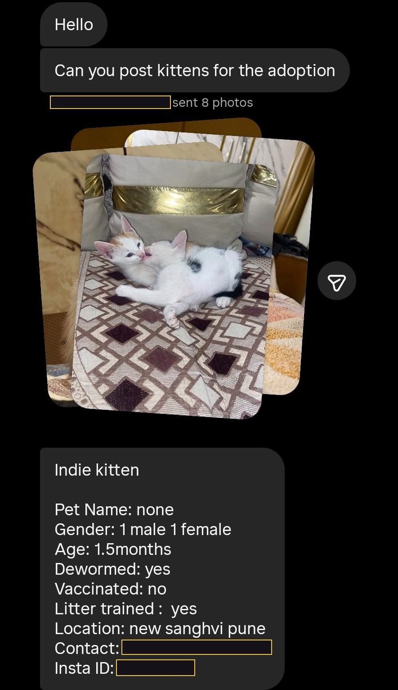

We are a notice-board, not a shelter. The cat stays with you, and we put it in front of the people in Pune who are looking. Nine things that get a post made faster.
This is the long version of the six lines at the bottom of the board. It exists because a DM scrolls away, and nobody should have to remember what we asked for last time.

This is a real one.Photos and words in the same message, the age, male or female, a number, an area. Nothing fancy, nothing formatted — someone typed this on a phone and it got the kittens posted. We have blacked out their number and handle; on the real post, a contact is exactly what goes in. If you would rather copy a shape than start from a blank box, copy this one. Everything below is just this picture, explained.
01One message, with the photos in it.
Photos and words together, in one message, is what gets a cat posted fastest. Clear daytime pictures — not a flash, not a dark corner, and the whole cat rather than a close-up. Write it in English, Hinglish or Marathi, whichever is comfortable, the way you would tell a friend. Every one of them is read by a person.
02Age. Your best guess is fine.
We post kittens from about a month and a half. Almost nobody gets the age right and that is genuinely all right — four and five month olds reach us described as "just born" all the time. If you want to get closer, go by what the kitten can do rather than how small it looks: the stages are here. Under four weeks changes what we can do, so it is worth a second look.
03Where, and a number we can put on the post.
The area is enough — Baner, Kothrud, Kharadi, wherever. And a contact, because it goes into the picture itself and adopters message it directly. Send the one you are happy to have on a public post: usually a phone number, sometimes an Instagram handle. Tell us if you would rather we tagged you instead, and whether we may credit your photos.
04Dewormed? Vet check? Vaccinated, if over two months?
Tell us honestly, because "not yet" is not a rejection. In Pune vaccines usually happen at month two and month three, and neutering after five months. Plenty of rescuers are paying for all of it out of their own pocket and simply cannot get to it yet — and plenty of adopters would rather do it themselves so they know for certain it was done. Say where things stand and that goes on the post as it is.
05The cat stays with you until it is adopted.
This is the part that surprises people, so we would rather say it early than let you find out later. There is no shelter here — none in Pune as such, not even a government one — so nobody can take the cat off your hands, and that includes us. What we do is put it in front of the people who are looking, and stay in the conversation while that happens.
"I only facilitate. I don't travel to help cats. I don't foster."
06Plan for about a month.
That is roughly how long it takes a cat to find the right home, and it is never instant. Some go in a week; a shy cat or a grown cat can take considerably longer, and kittens move fastest of all. If you need the cat out of your house sooner than that, this is not the route, and we would rather tell you now than let you wait. Ask family and friends whether anyone can keep it in the meantime — that works more often than people expect — or speak to an NGO; the numbers are on our emergency page. Getting the post made takes us a few days on top of that, sometimes a good deal longer, and if you have not heard back it is capacity rather than a no. Message again; things get buried and a second message is welcome.
"I have another full-time job, this is a volunteer only org, I do what I can."
07If it is a grown cat, say so.
Kittens go quickly. Grown cats wait months for exactly the same message, so we never put them in a post behind a litter of kittens — they get their own, and we reshare them harder and for longer. Knowing it is an adult from the first message changes how we post it, not whether we do. They are very often the easier ones to live with, and we say so every time.
08Hurt, or in danger right now? Not us.
We have no vehicle, no medical setup and nobody on the ground — that is an honest limit, not a brush-off. A cat that is injured, poisoned, hit or stuck needs an NGO with an ambulance, today. The numbers are on our emergency page, and several of them answer at night. Come back to us once it is out of danger and needs a home.
09A newborn with no mother is a different job.
Kittens too small to eat on their own cannot be posted for adoption yet, and bottle-feeding one is a two-hourly commitment for weeks. Before anything else, ask around your society — a watchman very often knows of a stray mother who has just had a litter and will accept one more. That works more often than you would expect. Message us either way; and read this first, because the mother is sometimes still around.
Rescuers are doing the hard part.
Almost everyone who sends us a cat is paying for it themselves, out of their own pocket and out of the goodness of their hearts, while holding down the rest of their life. We are the notice-board. The work is yours, and we know it.
One last thing: tell us when the cat is adopted
It takes us thirty seconds and it matters more than it sounds. The first photo in every post is the only one carrying a phone number, so when you tell us, we pull that photo down and mark the caption ADOPTED — which stops calls arriving for a cat that already has a home, sometimes months later. A message saying just "adopted" is enough. We will be delighted.
And if you have another litter later, send it the same way. Nothing needs to start over.
Send this to whoever is fostering
A screenshot travels through a rescuer WhatsApp group. A link usually does not.
Sending us a cat?
Put this in one message
1Clear daytime photos.The whole cat, no flash, not a dark corner.
2Age — best guess is fine.We post kittens from about 1½ months.
3Area, and a contact for the post.It goes in the picture, so send a public-safe one.
4Dewormed? Vet check? Litter-trained?"Not yet" is fine. Just say where it stands.
5Over 2 months — vaccinated?Pune usually does month 2 and month 3.
6Can you keep them till adopted?No shelter here, and it takes about a month. Sooner? Ask family, or an NGO.
 catadoption_pune
catadoption_pune